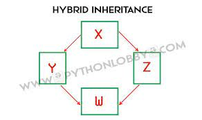

oops concept
- Class
- Objects
- Polymorphism
- Encapsulation
- Inheritance
- Data Abstraction
1.Class
In Python, a class is a blueprint or template for creating objects. It defines a set of attributes (data members or properties) and methods (functions or behaviors) that the objects created from the class will have. Here is the basic syntax for defining a class in Python:
class syntax
class classname:
statements
....
statements
Example:
class one:
pass
2.objects
In Python, an object is an instance of a class. A class defines a blueprint or template for creating objects, and an object is a concrete instance based on that template. Objects have attributes (data members or properties) and methods (functions or behaviors) associated with them.
syntax
class classname:
statements
....
statements
classname()#object creation
Example:
class one:
def app(self):
print("hello")
o=app()
output:hello
3.Polymorphism
Polymorphism is a key concept in object-oriented programming (OOP) that allows objects of different types to be treated as objects of a common base type. In Python, polymorphism is achieved through method overriding and duck typing.
There are two types:
- Method Overriding
- Method Overloading
Method Overloading
Two or more methods have the same name but different numbers of parameters or different types of parameters, or both. These methods are called overloaded methods and this is called method overloading.
syntax:
class classname:
def same_method_name():
statements
def same_method_name():
statements
Example:
class apple:
def add(self,a,b):
print(a+b)
def add(self,a,b,c):
print(a+b+c)
v=apple()
v.add(2,3)
v.add(1,2,3)
output:5
6
Method Overriding
Method overriding is an ability of any object-oriented programming language that allows a subclass or child class to provide a specific implementation of a method that is already provided by one of its super-classes or parent classes. When a method in a subclass has the same name, same parameters or signature and same return type(or sub-type) as a method in its super-class, then the method in the subclass is said to override the method in the super-class.
syntax:
class parentclassname:
def same_class_method(self)
statements
class childclassname(parentclassname):
def same_class_method(self):
statements
Example:
class para:
def hello(self):
print("hello1")
class chill(para):
def hello(self):
print("hello2")
o=chill()
o.hello()
output:hello2
4.Encapsulation
Encapsulation is one of the fundamental principles of object-oriented programming (OOP) and is supported in Python. It involves bundling the data (attributes) and methods (functions) that operate on the data into a single unit known as a class. The key idea behind encapsulation is to hide the internal details of the object and provide a well-defined interface for interacting with it.
In Python, encapsulation is achieved using private and protected access modifiers. These access modifiers control the visibility of class members, such as attributes and methods, from outside the class. The two main access modifiers used for encapsulation in Python are:
public:
Members with public access are accessible from outside the class.
No special syntax is needed for public members, as everything is public by default.
public:
public method can be accessed by anyone
class aa:
def se(self):
print("hello")
class go(aa):
pass
class to(go):
pass
y=to()
y.se()
output:hello
Protected:
protected class can be accessed within the same package only
class anty:
def _al(self):
print("hi")
class abc(anty):
pass
class yup(abc):
pass
u=yup()
u._al()
output:hi
Private
private can be accessed within the class only
class one:
def __sell(self):
print("hello")
class two(one):
pass
class three(two):
pass
u=three()
u.__sell()
output:method cannot be called
class one:
def __sell(self):
print("hello")
def onep(self):
self.__sell()
u=one()
u.onep()
output:hello
5.Inheritance
Inheritance allows us to define a class that inherits all the methods and properties from another class.
Parent class is the class being inherited from, also called base class.
Child class is the class that inherits from another class, also called derived class.
there are five types inheritance:
- Single Inheritance
- Multiple Inheritance
- Multilevel Inheritance
- Hierarchical Inheritance
- Hybrid Inheritance
1.Single Inheritance
Single inheritance enables a derived class to inherit properties from a single parent class, thus enabling code reusability and the addition of new features to existing code.
Example:
class one:
def area(self):
print("hello")
class two(one):
pass
p=two()
p.area()
output:hello
2.Multiple Inheritance.
When a class can be derived from more than one base class this type of inheritance is called multiple inheritances. In multiple inheritances, all the features of the base classes are inherited into the derived class.
Example:
class one:
def area(self):
print("hi")
class two:
def ar(self):
print("hi")
class three(one,two):
pass
yu=three()
yu.area()
output:hi
3.Multilevel Inheritance
Multilevel Inheritance in Python is a type of Inheritance that involves inheriting a class that has already inherited some other class. That means the derived/subclass class inherits the features of the base class/parent class, and the new derived class inherits the features of the derived class.

Example:
class one:
pass
class two(one):
def area(self):
print("hello")
class three(two):
pass
we=three()
we.area()
output:hello
4.Hierarchical Inheritance
When more than one derived class are created from a single base this type of inheritance is called hierarchical inheritance. In this program, we have a parent (base) class and two child (derived) classes.
class one:
def area(self):
print("hello")
class two(one):
pass
class three(one):
pass
io=one()
io.area()
output:hello
5.Hybrid Inheritance
Hybrid Inheritance is a blend of more than one type of inheritance. The class is derived from the two classes as in the multiple inheritance. However, one of the parent classes is not the base class. It is a derived class.

class one:
def area(self):
print("hi")
class two(one):
def aty(self):
print("hello")
class three(one):
pass
class four(two,three):
pass
ty=four()
ty.aty()
output:hello
6.Data Abstraction
Data abstraction is one of the most essential concepts of Python OOPs which is used to hide irrelevant details from the user and show the details that are relevant to the users.
Example
from abc import ABC, abstractmethod
class BaseClass(ABC):
@abstractmethod
def method_1(self):
#empty body
pass